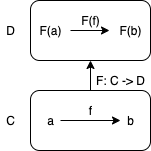
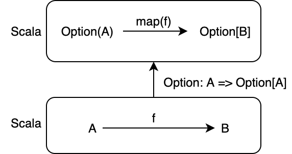
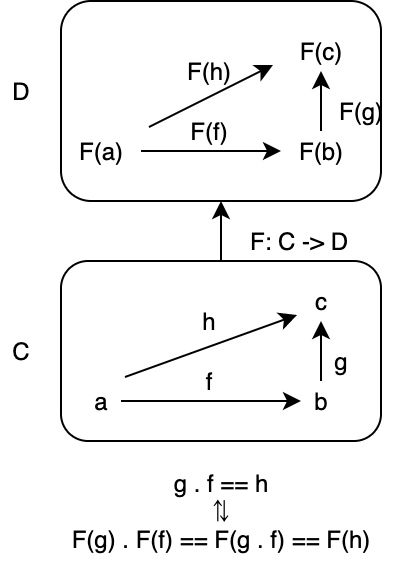

7. 関手
圏は対象の集まりと射の集まりからなりますが、これまでに何度か「対象を圏として圏を構成できるのではないか？」と思った人もいるのではないでしょうか。
その疑問に対する答えは「できる」です。今回定義する関手を使えば、圏の構造（つまり、圏の図式の形）を維持したまま別の圏に変換できるようになります。
関手は、非常に単純ですが強力な概念です。本章では、関手とは何かについて定義し、プログラミングにおける関手の例を示します。
目次
7.1 関手とは
関手 (functor) は、ある圏 C を別のある圏 D に変換する対応 F のことです。
関手の例としては Option 関手、List 関手、Writer 関手、モノイド準同型などがあります。モノイド準同型は、モノイド間の関手です。
Option 関手は、型 A の値を Option で包んで型 Option[A] に変換します。また、関数 A => B を関数 Option[A] => Option[B] に変換します。
同様に、List 関手は型 A を List[A] に変換し、関数 A => B を List[A] => List[B] に変換します。Writer 関手も型 A を Writer[A] に変換し、関数 A => B を Writer[A] => Writer[B] に変換します。
圏は対象と射から構成されるので、圏を変換するには対象と射それぞれに関する対応を定義する必要があります。

7.1.1 対象関数
関手において、ある圏の対象を別のある圏の対象に変換するような対応を対象関数といいます。一般に、圏 C から D への関手 F は、圏 C の対象 a を D の対象 F(a) に対応させます。
// 対象関数
def obj[F[_], A]: A => F[A] = ???
Option 関手の例で言うと、Option 関手は型 A を型 Option[A] に対応させています。
def objOptFunc[A]: A => Option[A] = Option(_)
objOptFunc(3)
// res1: Option[Int] = Some(value = 3)
objOptFunc("Hoge")
// res2: Option[String] = Some(value = "Hoge")
7.1.2 射関数
関手において、ある圏の射を別のある圏の射に変換するような対応を射関数といいます。一般に、圏 C から D への関手 F の射関数 fmap は、圏 C の射 f: a -> b を D の射 F(f): F(a) -> F(b) に対応させます。
// 射関数
def fmap[F[_], A, B]: (A => B) => (F[A] => F[B]) = ???
例えば、Option 関手においては、射 f: A => B を fmap(f): Option[A] => Option[B] に対応させる必要があります。この対応は、標準ライブラリにある Option#map メソッドによって実現されます：
def fmapOptFunc[A, B]: (A => B) => (Option[A] => Option[B]) =
f => optA => optA.map(f)
def isEven: Int => Boolean = n => n % 2 == 0
def negate: Boolean => Boolean = b => !b
fmapOptFunc(isEven)(Option(3))
// res3: Option[Boolean] = Some(value = false)
fmapOptFunc(isEven)(Option(4))
// res4: Option[Boolean] = Some(value = true)
fmapOptFunc(negate)(Option(true))
// res5: Option[Boolean] = Some(value = false)
fmapOptFunc(negate)(Option(false))
// res6: Option[Boolean] = Some(value = true)

この射関数が満たすべき性質として、以下の2つがあります：
- C の射 f, g の合成
g compose fについてfmap(g compose f) == fmap(g) compose fmap(f)が成り立つこと。 - C の任意の対象 A の恒等射
identity[A]についてfmap(identity[A]) === identity[F[A]]が成り立つこと。
1つ目の性質は、関手が射の合成を保存することを意味します。
import hamcat.util.Eq.===
def f[A, B]: A => B = ???
def g[B, C]: B => C = ???
def assert1[F[_], A, B, C] = fmap[F, A, C](g[B, C].compose(f[A, B])) === fmap[F, B, C](g[B, C]).compose(fmap[F, A, B](f[A, B]))
Option 関手の場合、満たされることが確認できます。
fmapOptFunc(negate.compose(isEven))(Option(3))
// res7: Option[Boolean] = Some(value = true)
(fmapOptFunc(negate).compose(fmapOptFunc(isEven)))(Option(3))
// res8: Option[Boolean] = Some(value = true)
fmapOptFunc(negate.compose(isEven))(Option(4))
// res9: Option[Boolean] = Some(value = false)
(fmapOptFunc(negate).compose(fmapOptFunc(isEven)))(Option(4))
// res10: Option[Boolean] = Some(value = false)

射関数の2つ目の性質は、関手が恒等射を保存することを意味します。
def assert2[F[_], A] = fmap[F, A, A](identity[A]) === identity[F[A]]
Option 関手の場合、満たされることが確認できます。
fmapOptFunc(identity[Int])(Option(3))
// res11: Option[Int] = Some(value = 3)
identity[Option[Int]](Option(3))
// res12: Option[Int] = Some(value = 3)
以上の性質は、圏の構造を保存する対応を表す性質です。このような2つの性質を関手性 (functor laws) と呼びます。
7.1.3 関手の定義
では、関手の定義を与えましょう。一般に、関手は以下のように定義されます。
圏 C から圏 D への関手 (functor) F とは、以下を満たす対応のことです。
- C の射 f: a -> b を D の射 F(f): F(a) -> F(b) すなわち
fmap(f): F[A] => F[B]に対応させること。 - C の射 f, g の合成
g compose fについてfmap(g compose f) == fmap(g) compose fmap(f)が成り立つこと。 - C の任意の対象 A の恒等射
identity[A]についてfmap(identity[A]) == identity[F[A]]が成り立つこと。
先ほどみたように、2 番目と 3 番目は関手性を表します。
なお、圏 C と D は同じであってもよく、特に圏 C から圏 C への関手は自己関手 (endofunctor) と呼ばれます。Scala 圏における関手は全て、自己関手です。
7.2 プログラミングにおける関手
前節では、関手の定義を与えました。本節では、Scala プログラミングにおける関手を考えていきます。
7.2.1 Functor 型クラス
関手は Scala において、以下のような型クラス Functor として実装できます。Functor 型クラスは、対象関数として型構築子 F[_] をもち、射関数として fmap メソッドを持ちます。
trait Functor[F[_]]:
def fmap[A, B](f: A => B): F[A] => F[B]
fmap メソッドは関数を引き上げる (lift)、とも言われます。関数 A => B は fmap によって F[_] 上の関数 F[A] => F[B] に引き上げられます。
7.2.2 Option 関手
ある型 F[_] に対する Functor のインスタンスを実装してみましょう。ここでは、Option についての Functor のインスタンスを定義します。
Option 型に対する Functor のインスタンスは、以下のように実装できます。Functor に必要なパラメータは型構築子としての Option です。また、抽象メソッドである射関数 fmap を実装する必要があります。
given Functor[Option] with
def fmap[A, B](f: A => B): Option[A] => Option[B] = _.map(f)
Option 関手の fmap メソッドは Option#map メソッドと同じです。実装を見てわかる通り、fmap メソッドが関手性を満たすかどうか、つまり圏の構造を維持する対応かどうかは実装によります。定義だけでは fmap メソッドが必ず関手性を満たすとは言えませんが、関手性を満たすように fmap メソッドを実装しなければいけません。
実際にこのインスタンスを使ってみましょう。fmap に Option(3) と isEven (偶数かどうかを判定する関数) を与えると、Option(3) の中の値に isEven を適用した結果 (すなわち Some(false)) が出力されます。
summon[Functor[Option]].fmap(isEven)(Option(3))
// res13: Option[Boolean] = Some(value = false)
summon[Functor[Option]].fmap(isEven)(Option(4))
// res14: Option[Boolean] = Some(value = true)
なお、毎回 summon[Functor[Option]].fmap(...) と書くのは面倒ですし、不便です。この場合、以下のように拡張メソッドを定義することによって Option#fmap メソッドとして呼び出せるようになります。
extension [F[_], A](fa: F[A])
def fmap[B](f: A => B)(using functor: Functor[F]): F[B] =
functor.fmap[A, B](f)(fa)
Option(3).fmap(isEven)
// res15: Option[Boolean] = Some(value = false)
Option(4).fmap(isEven)
// res16: Option[Boolean] = Some(value = true)
では、この Option 関手の fmap メソッドが関手性を満たすかどうかについて調べてみましょう。
関手性とは、以下が成り立つことでした。
- C の射 f, g の合成
g compose fについてfmap(g compose f) == fmap(g) compose fmap(f)が成り立つこと。 - C の任意の対象 A の恒等射
identity[A]についてfmap(identity[A]) == identity[F[A]]が成り立つこと。
isEven 関数と negate 関数を使ってこちらを確認してみます。
val optionFunctor = summon[Functor[Option]]
// optionFunctor: given_Functor_Option = repl.MdocSession$MdocApp0$given_Functor_Option$@e68810b
def negate(b: Boolean): Boolean = !b
// fmap(g compose f) == fmap(g) compose fmap(f) の確認
optionFunctor.fmap(negate compose isEven)(Option(3))
// res17: Option[Boolean] = Some(value = true)
optionFunctor.fmap(negate).compose(optionFunctor.fmap(isEven))(Option(3))
// res18: Option[Boolean] = Some(value = true)
// fmap(identity[A]) == identity[F[A]] の確認
optionFunctor.fmap(identity[Int])(Option(3))
// res19: Option[Int] = Some(value = 3)
identity[Option[Int]](Option(3))
// res20: Option[Int] = Some(value = 3)
7.2.3 Reader 関手
次の例として、型 A を受け取ったとき、任意の型 R を受け取って A を返すような関数 R => A に変換するような関手を考えます。この関手は Reader 関手と呼ばれます。
case class Reader[R, A](run: R => A)
def objReaderFunctor[R, A](f: R => A): Reader[R, A] = Reader[R, A](f)
def fmapReaderFunctor[R, A, B](f: A => B): Reader[R, A] => Reader[R, B] = fa =>
Reader(fa.run.andThen(f))
R => A という表記は関数であり、Scala においては1変数関数の型 Function1[R, A] であることがわかります。
すなわち、Reader の対応が関手であるということは、関数も関手であるといえます。関数が関手であれば、型 R を受け取って A を返すような関数 R => A があったとき、A を B に変換する関数 f: A => B を与えれば R から B の関数を取得することができます。
Reader 関手のインスタンスは、以下のように実装できます。対象関数は型構築子 [X] =>> Reader[R, X]、射関数 fmap は関数合成です。ここで、[X] =>> Reader[R, X] の表記は Scala 3 の Type Lambda というもので、R => X を表します。
given [R]: Functor[[X] =>> Reader[R, X]] with
def fmap[A, B](f: A => B): Reader[R, A] => Reader[R, B] = fa =>
Reader(fa.run.andThen(f))
これを使うと、例えば以下のようなことができます。
def length[A]: Reader[List[A], Int] = Reader(_.length)
def greaterThanZero: Int => Boolean = _ > 0
// List[A] => Int を List[A] => Boolean に変換する
def nonEmpty[A]: Reader[List[A], Boolean] = length.fmap(greaterThanZero)
nonEmpty.run(List(1,2,3))
// res21: Boolean = true
nonEmpty.run(List.empty[Int])
// res22: Boolean = false
関数合成 (andThen, compose) が Reader 関手の射関数であるのですね。
7.2.4 Writer 関手
4章で、Kleisli 圏の例として Writer 圏を見ました。Writer 圏において、以下のような型 Writer を導入しました。
import hamcat.Semigroup
import hamcat.Monoid
import hamcat.syntax.semigroup.*
case class Writer[L, A](run: (L, A))
object Writer:
def pure[L, A](a: A)(using m: Monoid[L]): Writer[L, A] = Writer((m.empty, a))
def >=>[L, A, B, C](using Semigroup[L]): (A => Writer[L, B]) => (B => Writer[L, C]) => (A => Writer[L, C]) = f => g => a =>
val (logF, b) = f(a).run
val (logG, c) = g(b).run
Writer((logF |+| logG), c)
extension [L, A, B](f: A => Writer[L, B])
def >=>[C](using Semigroup[L])(g: B => Writer[L, C]): A => Writer[L, C] =
Writer.>=>(f)(g)
Writer 圏における対象は任意の型 A で、A から A への射は A => Writer[L, A] だと定義しました。
実は、Writer 圏における射の合成をうまく活用することによって、Writer についての fmap メソッドを実装することができます。そのため、Writer は関手であって、Writer 関手と呼ばれます。
given [L](using m: Monoid[L]): Functor[[X] =>> Writer[L, X]] with
def fmap[A, B](f: A => B): Writer[L, A] => Writer[L, B] =
identity[Writer[L, A]] >=> (a => Writer.pure[L, B](f(a)))
given Monoid[String] with
def combine(a: String, b: String): String = a + b
def empty: String = ""
val stringWriterFunctor = summon[Functor[[X] =>> Writer[String, X]]]
// stringWriterFunctor: given_Functor_Writer[String] = repl.MdocSession$MdocApp0$given_Functor_Writer@6a3238e3
val intWriter = Writer[String, Int]("hogehoge. ", 12345)
// intWriter: Writer[String, Int] = Writer(run = ("hogehoge. ", 12345))
val double: Int => Int = _ * 2
// double: Function1[Int, Int] = repl.MdocSession$MdocApp0$$Lambda/0x00007f84f229f1b0@31dccb1d
stringWriterFunctor.fmap(double)(intWriter)
// res23: Writer[String, Int] = Writer(run = ("hogehoge. ", 24690))
val listWriter = Writer[String, List[Int]]("hogehoge. ", List(1,2,3,4,5))
// listWriter: Writer[String, List[Int]] = Writer(
// run = ("hogehoge. ", List(1, 2, 3, 4, 5))
// )
val listLength: List[Int] => Int = _.length
// listLength: Function1[List[Int], Int] = repl.MdocSession$MdocApp0$$Lambda/0x00007f84f22a0f88@7a6a1863
stringWriterFunctor.fmap(listLength)(listWriter)
// res24: Writer[String, Int] = Writer(run = ("hogehoge. ", 5))
7.3 関手の合成
さて、圏を対象として関手を射とするような圏を考えるとき、射の合成、すなわち関手の合成を定義する必要があります。
Scala 圏における関手は全て自己関手なので、自己関手同士を合成することができるのかどうかについて考えてみましょう。
例えば、2つの関手 Option 関手と Reader 関手を合成してみるとどうなるでしょうか。関手の合成に関しても、対象関数の合成と射関数の合成を考える必要がありそうです。
// 対象関数の合成
case class ReaderOption[R, A](run: R => Option[A])
val toIntOption: ReaderOption[String, Int] = ReaderOption(_.toIntOption)
// toIntOption: ReaderOption[String, Int] = ReaderOption(
// run = repl.MdocSession$MdocApp0$$Lambda/0x00007f84f22a1780@8eeb4cb
// )
toIntOption.run("12345")
// res25: Option[Int] = Some(value = 12345)
toIntOption.run("hoge")
// res26: Option[Int] = None
// 射関数の合成
given [R](using readerF: Functor[[X] =>> Reader[R, X]], optionF: Functor[Option]): Functor[[X] =>> ReaderOption[R, X]] with
def fmap[A, B](f: A => B): ReaderOption[R, A] => ReaderOption[R, B] = fa =>
ReaderOption(readerF.fmap(optionF.fmap(f))(Reader[R, Option[A]](fa.run)).run)
toIntOption.fmap(_ * 2).run("12345")
// res27: Option[Int] = Some(value = 24690)
toIntOption.fmap(_ * 2).run("hoge")
// res28: Option[Int] = None
自然と関手を定義してしまいましたが、関手の合成によって定義された射関数は、射の合成を保存しています。また、恒等射も保存します。
// fmap(g compose f) == fmap(g) compose fmap(f)
def assert3[R] =
val f = summon[Functor[[X] =>> ReaderOption[R, X]]]
f.fmap(negate.compose(isEven)) === f.fmap(negate).compose(f.fmap(isEven))
val readerOptionFunctor = summon[Functor[[X] =>> ReaderOption[String, X]]]
// readerOptionFunctor: given_Functor_ReaderOption[String] = repl.MdocSession$MdocApp0$given_Functor_ReaderOption@f013d
(readerOptionFunctor.fmap(negate.compose(isEven))(ReaderOption(_.toIntOption))).run("12345")
// res29: Option[Boolean] = Some(value = true)
(readerOptionFunctor.fmap(negate).compose(readerOptionFunctor.fmap(isEven))(ReaderOption(_.toIntOption))).run("12345")
// res30: Option[Boolean] = Some(value = true)
// fmap(identity[A]) == identity[F[A]]
def assert4[R, A] =
val f = summon[Functor[[X] =>> ReaderOption[R, X]]]
f.fmap(identity[A]) === identity[ReaderOption[R, A]]
((readerOptionFunctor.fmap(identity[Int]))(ReaderOption(_.toIntOption))).run("12345")
// res31: Option[Int] = Some(value = 12345)
(identity[ReaderOption[String, Int]](ReaderOption(_.toIntOption))).run("12345")
// res32: Option[Int] = Some(value = 12345)
したがって、関手の合成もまた、関手であることがわかります。
自己関手の場合のみを取り上げましたが、自己関手でない一般の関手に関してもこれは成り立ちます。興味があれば証明してみてください。
まとめ
- 関手は、ある圏を、構造を維持しながら別のある圏に変換する対応のこと。
- 関手の例として、Option、List、Reader などがある。
- 関手は、対象 A を対象 F[A] に対応させる。
- 関手は、射
f: A => Bを射fmap(f): F[A] => F[B]に対応させる。
- 関手が満たす以下の性質のことを、関手性と呼ぶ。
- 射 f, g の合成 g . f について
fmap(g compose f) == fmap(g) compose fmap(f)が成り立つこと。 - 恒等射
identity[A]についてfmap(identity[A]) == identity[F[A]]が成り立つこと。
- 射 f, g の合成 g . f について
- Reader 関手は、ある型
Aに対して、Aを返す任意の関数Function1[*, A]を対応させる関手である。